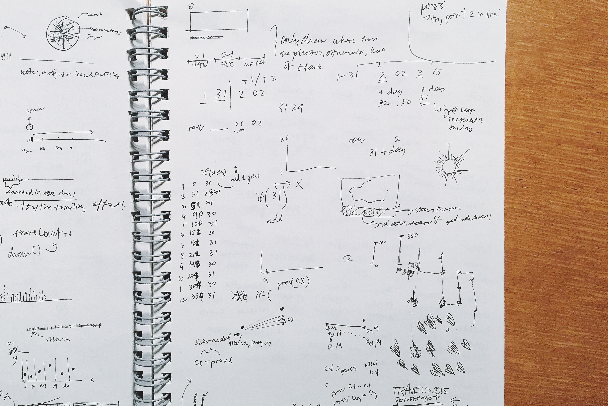
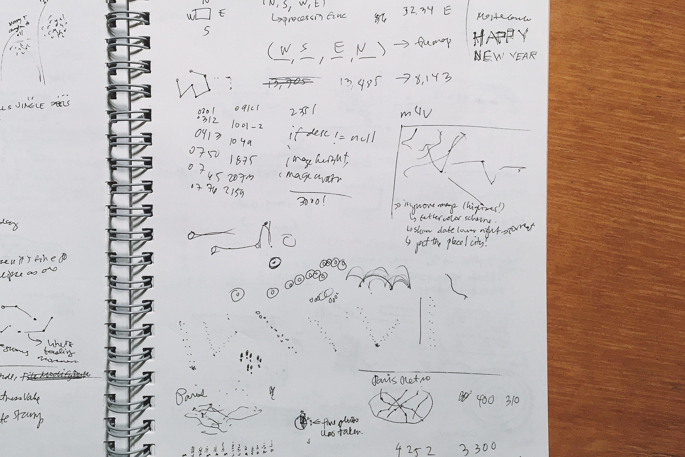

Travels in Pixels is a visualization art piece of white paint splatters on a winter night blue canvas. The work looks abstract on the surface but the underlying data reveals the structure of the otherwise seemingly arbitrary piece. Each point represents a specific geolocation on the map where I've set foot in 2015. It's an overview of the year that was, visualized in an extremely minimalist fashion where details only come to life after further inspection.

Gathering data was the tricky part. It turned out that I had to export all 14,000+ photos from the Photos app on Mac to get the version with GPS data. DSLR photos were not included because I don't organize those in any application. I used exiftool to get the important bits I needed then saved it to a CSV file. I had to run another script to convert latitude and longitude into decimal values (links to all technical details below). I manually removed the duplicate entries where two or more photos have the same exact coordinates. I was crazy not to write any script to do this task but it turned out to be quite manageable. Once I got that sorted out with around 8,000+ photos left, I was ready to put it all together.


I used to create the map, very convenient if you need something quick and clean. I then exported the map to SVG format for a bit of tweaking in Illustrator.
The rest was a matter of experimentation in Processing. I did two versions: the one above where the number of photos I took each day are represented by the diameter of the circle that surrounds the point; and the one below where the path is drawn on the map itself. I chose this certain level of detail to prevent anyone from prying into any of my personal routine.
It's quite a fun project to work on! I'd probably reuse this over the years just to see how much of the world I've covered. It's truly been an amazing year of travelling around Europe whilst completing my degree and research internship! I met loads of interesting people that I hope I would one day see again somewhere in the world!
Code on . GPS conversion .
Tools
Processing, Illustrator